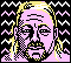 |
39A: Dustin and Cody, to the American Dream
57A: Hart, Snuka, Valiant, and Uso
71D: Clarence Mason, for one
|
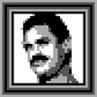 |
23D: Virgil’s WWF gimmick
38D: The ‘85-’96 era, per the Pro Wrestling Hall of Fame
21D: Taxable dividends, perhaps issued to owners of WWE stock
|
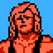 |
11A: Laconically, like Gordon Solie’s commentary
2D: A way of describing the matches staged here
65A: Johnny Swinger’s ECW partner Simon
|
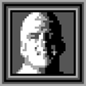 |
2A: Broda’s abodes
18D: Filming location of this
51A: Like Gangrel, perhaps
|
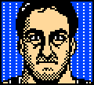 |
27A: Make one’s way through the crowd to the ring
49A: Played the Miz to one’s Riley
7A: State that 2008 film The Wrestler was primarily filmed in, for short
|
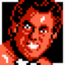 |
17D: “The Genius” Lanny Poffo, for one
64D: Hardcore Hall of Famer Terry
8A: To watch WrestleMania on Pay-Per-View again
|
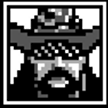 |
45A: HBK bid this in 2010
32A: Lord Mountevans of rulebook fame
19D: Sherri, to the Macho King
|
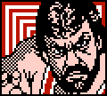 |
72A: Sigh of relief after escaping a pinfall
46A: Storm’s Saskatchewan Hardcore International ___
25A: Pro Wrestling Blitz’s “Night of ___” series
|
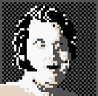 |
61D: They parallel the ulnae (and could get broken by the kimura)
62D: Nikki Bella can’t digest this
28D: Where C.M. Punk might entertain his guests, if feeling uncharacteristically classy
|
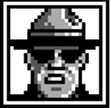 |
56D: Stacy Keibler’s non-wrestling occupation
3A: Regal and Perry, casually
13D: bWo leader The Blue ___
|
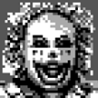 |
33D: Powers or Bucks, at SummerSlam 1988
4D: Dinero wound up in one during Final Resolution 2010
50D: WWE championship established 11/2/98
|
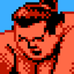 |
59A: Chris Chetti’s longtime tag partner
43D: Alberto Del Rio’s estate, quizás
10A: You’d put your Zack Ryder ringtone on this
|
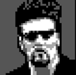 |
44D: Demand as a right (like a Money in the Bank title shot)
24D: What Edge’s statements about Toronto might be, regarding retirement
37D: To cathode what Goldberg was to Hogan in WCW
|
| |
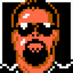 |
66A: Short-lived WCW gimmick seen here
60A: Expressed derision, as though reacting to Vickie Guerrero
55D: Junkyard Dog’s “___ them Cakes”
|
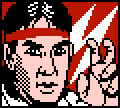 |
68A: Like the crowd in this
67D: Heels’ innate behaviors
40A: Former JAPW champion ___ Martinez
|
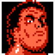 |
58A: What the Hulkster says people want, cold, in this
34D: Yokota, familiarly
54D: Owner of Juggalo Championship Wrestling
|
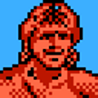 |
53D: Of no further use - like a certain barber shop window
15A: Godwinns’ chitlins ingredient
20A: WWE’s Cyber ___
|
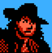 |
29D: Like Sheamus or Prince Devitt
48A: Savage’s Wrestlemania III foe
14D: Suspended, like a ladder match belt
|
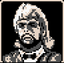 |
69D: Bradshaw carried it on his bullrope
30A: Holiday side dish (perhaps served alongside the Gobbledy Gooker?)
55A: ___ Angel (short-lived WCW gimmick)
|
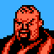 |
36A: Where Giant Silva may have grown up, if his family were poor migrants.
5D: The crowd didn’t just hate this, they ___ it
41D: JBL now provides advice on how to do this
|
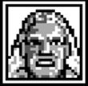 |
35A: Gunner’s former ring name
73A: Guzzles, like James Storm’s beer
1D: Hebner, Alfonso et al.
|
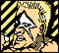 |
74A: Jake Roberts, perhaps, at Heroes of Wrestling
31A: Easily escapable, like a Hornswoggle sleeper hold
75A: One who does business with this FWA wrestler
|
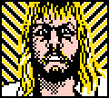 |
6D: Stone Cold’s leather garment
52D: Birthplace of Mr. Chile
12A: Decommissions nuclear waste, or what the Undertaker does to his victims
|
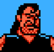 |
22A: Threadbare, like Cactus Jack’s flannel shirt
70A: The Big Show’s acromegaly affects these
47D: ___ press (more familiarly, the basic pin)
|
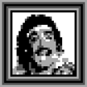 |
9D: Dr. Quack, if he actually tried to write prescriptions
27D: Greeted guests, as though to Piper’s Pit
16A: Pimples, perhaps as steroid side effect
|
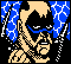 |
63D: Like a Sabu vs. Funk match?
42A: Incongruity, like that of the WWE’s anti-bullying campaign
26A: Like the Million Dollar Man
|
|
{kind=link}